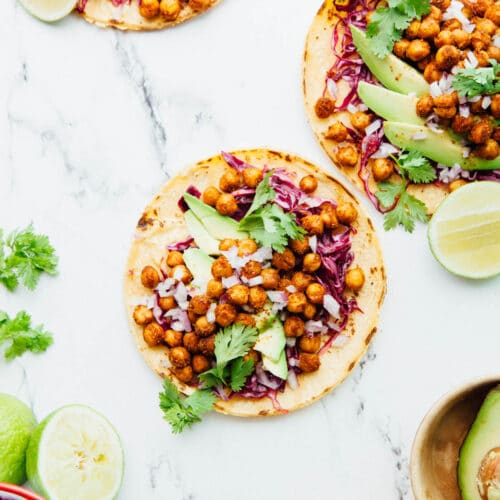

Chickpea Tacos

Description
These chickpea tacos are a cheap way to enjoy a protein-packed
finger food on short notice. Being a vegan dish they're also
rather healthy!
Ingredients
- Canned Chickpeas
- Corn tortillas
- Avocado
- Garam Masala
- Curry Powder
- Cilantro
- Avocado
- Purple cabbage
- Red onion
- Lime
Steps
- Dry your canned chickpeas and set them in a bowl.
- Peel the shells if you prefer. Coat chickpeas with
your seasonings, salt and pepper. Set on baking sheet and
roast at 400F for 27 to 30 minutes or until crisp.
- Meanwhile, prepare your chosen dressings by chopping the cabbage,
onion, avocado and lime. Set aside to garnish tacos later.
- When chickpeas are almost done, heat a saute pan until ripping hot
and warm your tortillas on it.
- When the chickpeas are done, assemble by adding chickpeas to the
tortillas, and top with your prepared dressings.